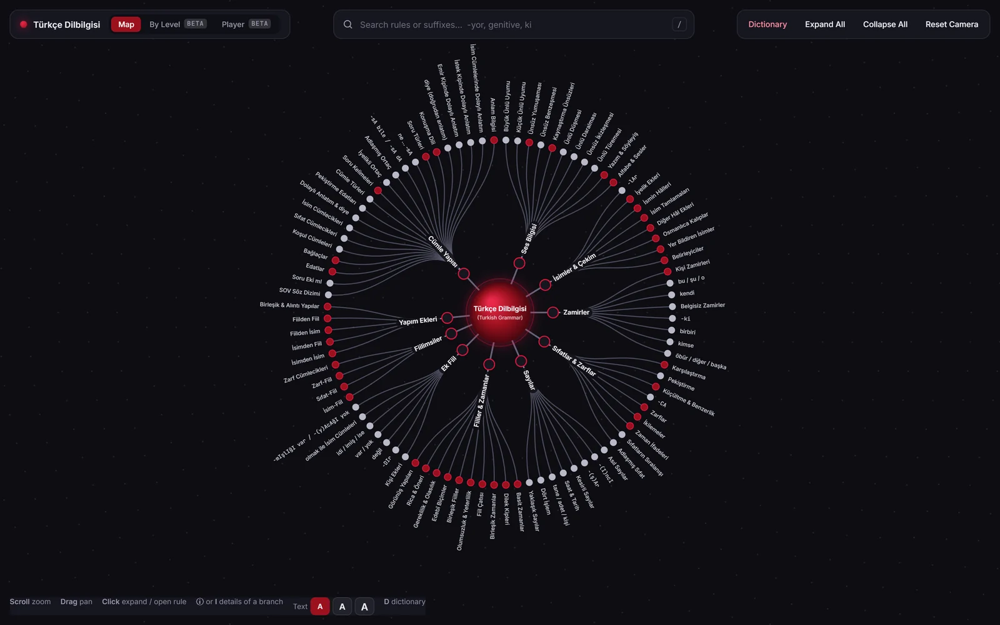
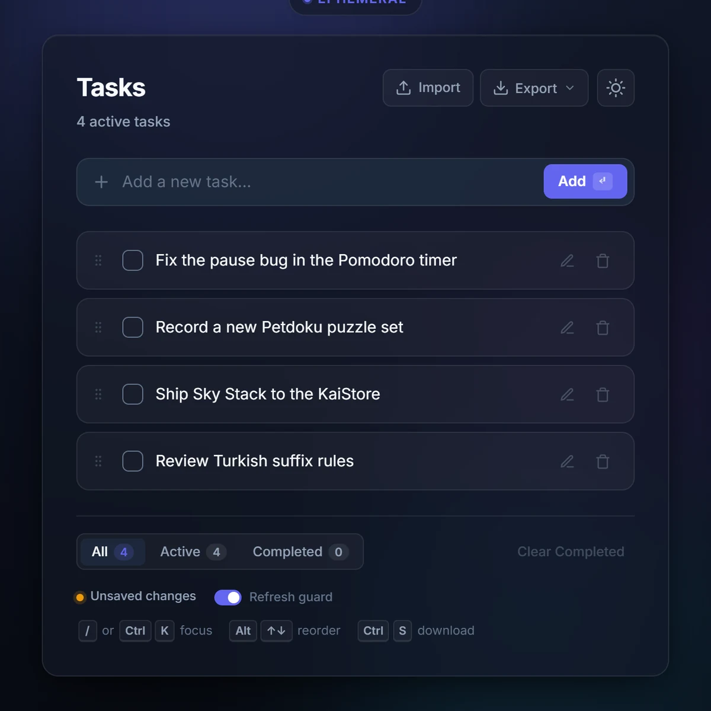
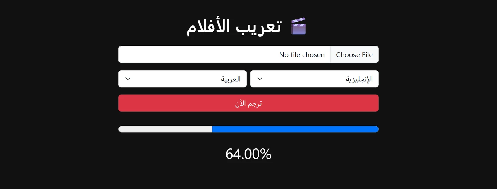

Hi, I’m Mohammed.
I build tools for learning languages, and games for tiny screens.
I’m a student developer from Yemen. I write Rust, WebAssembly and plain JavaScript, and most of what I make either helps me learn Turkish or fits on a 240 × 320 phone display.
- Turkish grammar rules mapped
- 350
- dictionary words, fully offline
- 22,000
- languages for subtitles
- 20+
- KaiOS games on the way
- 3
Projects
Things I’ve built.
Open any project for the details, or jump straight to the code.
Rust · WebAssembly
Türkçe Dilbilgisi
Turkish grammar as a map you can explore. 350 rules, zoomable, searchable, and running in the browser.
Learn more
Native Rust desktop app
TRLearn Player
Watch in Turkish with English underneath. Tap any word to see what it means.
Learn moreJavaScript · No dependencies
Ephemeral
A to-do list that forgets on purpose. Nothing is stored until you choose to save it.
Learn more
Python · Flask
Movie Subtitle Translator
Turn an .srt file into Arabic, or 20 other languages, and watch the progress live.

Rust · Slint
Lightweight Pomodoro
A focus timer in a 2.7 MB executable. I fixed its timer drift and added cycle tracking.
Learn moreGames
Made for KaiOS.
Small games for feature phones with a D-pad, two soft keys and no touchscreen. Written in plain ES5 so the same code runs on KaiOS 2.5 and 3.x. Coming to the KaiStore.
About
A bit about me.
I’m Mohammed Maharm, a student in Yemen. I started small: an HTML page for an ICT class, a calculator in Python, a first file of C++. These days I mostly write Rust.
Many of my projects come from learning Turkish. I wanted to see the whole grammar at once, so I drew it as a map. I wanted to tap a word in a subtitle and get its meaning, so I built a player that does that.
I also like the limits of tiny screens. My KaiOS games run on phones with no touchscreen, so every pixel and every key press has to earn its place.
How I got here
- 2021ICT Project, my first website, in HTML and CSS.
- 2022A Python calculator and my first C++.
- 2025A Flask app that translates movie subtitles into Arabic.
- 2026Rust: a Turkish learning player, a grammar map in WebAssembly, a Pomodoro timer. Plus three KaiOS games.
Want to see more?
Everything I make is on GitHub. Star something, open an issue, or say hello.
github.com/ghost545a